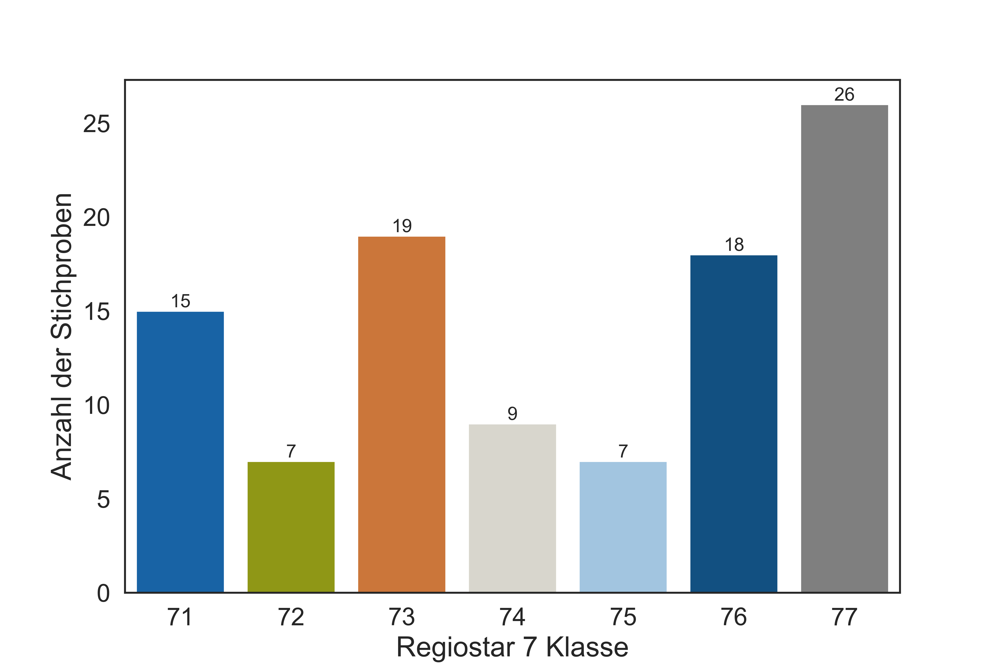
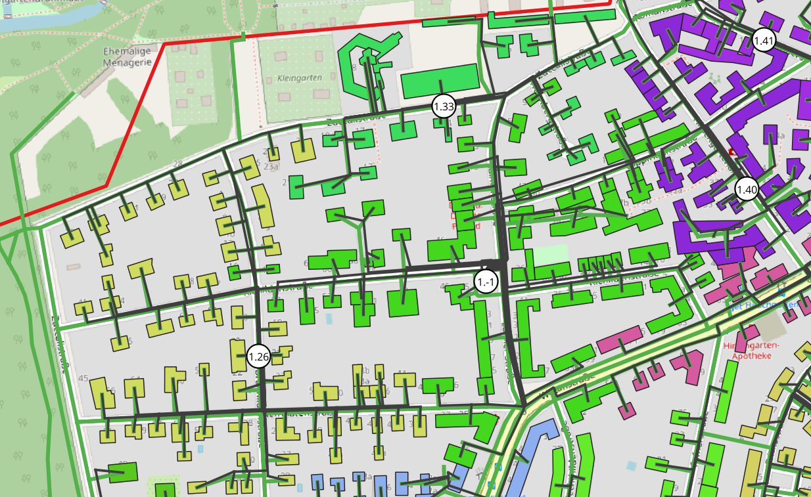
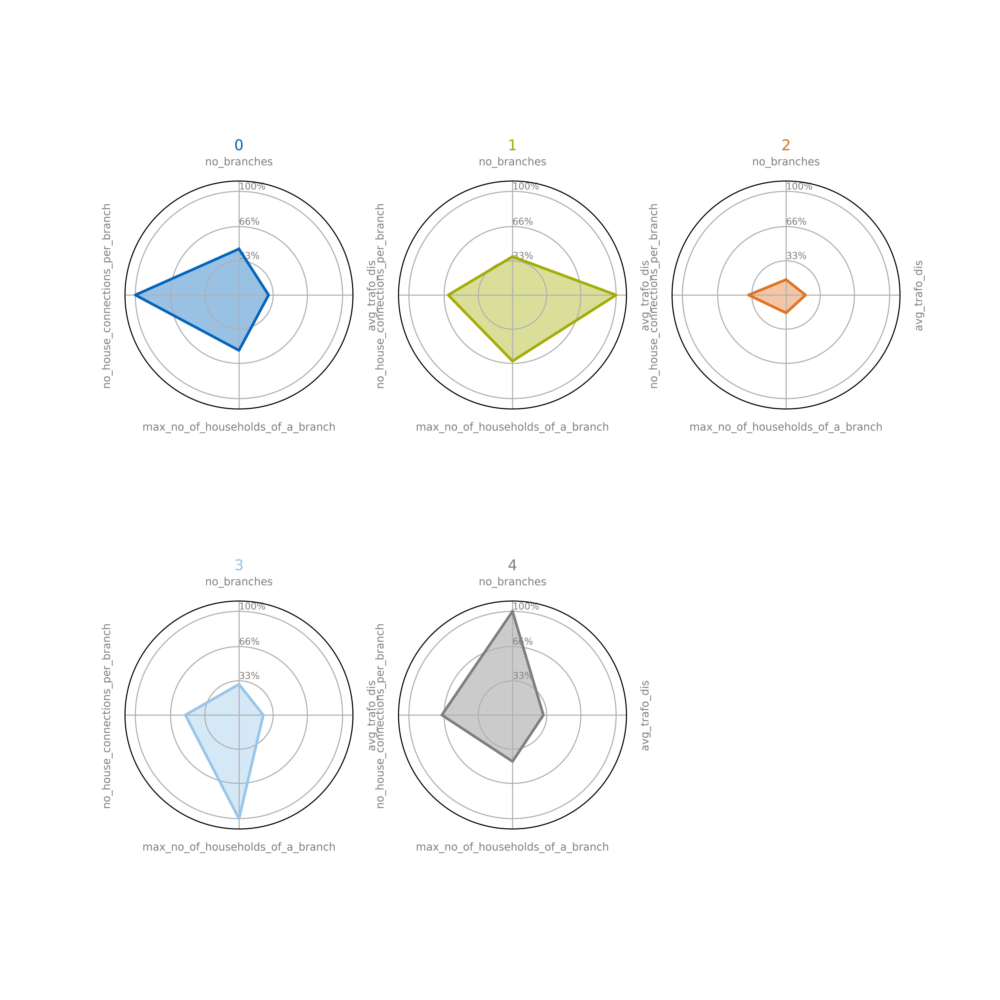

Usage
Step 1: Configure the classification
Open the file config_classification.py. Set up the classification by giving it a classification version,
a description and a region, e.g.:
CLASSIFICATION_VERSION = 1
VERSION_COMMENT = "set sample with inspected building quality"
CLASSIFICATION_REGION = 'Bayern'
A classification version is a unique identifier for your classification and can only be used once. The version comment can be used to describe the settings used in the classification version. For the region either choose one of the federal states of Germany
REGION_DICT = {1: 'Schleswig-Hohlstein',
2: 'Hamburg',
3: 'Niedersachsen',
4: 'Bremen',
5: 'Nordrhein-Westfalen',
6: 'Hessen',
7: 'Rheinland-Pfalz',
8: 'Baden-Württemberg',
9: 'Bayern',
10: 'Saarland',
11: 'Berlin',
12: 'Brandenburg',
13: 'Mecklenburg-Vorpommern',
14: 'Sachsen',
15: 'Sachsen-Anhalt',
16: 'Thüringen',
}
'Germany' for the entire country.Once you run the classification the constants that you have set will be saved
in the database table classification_version.
Step 2: Calculate the Data for Clustering
prepare_data_for_clustering.py.Threshold values for filtering can be set in clustering.config_clustering.
The processes run here are explained in Create a Sample Set of PLZ for Clustering, Grid Generation for Classification, Calculate Parameters for Grids and Filter Grids.
Step 3: Inspect sampling results (optional)
In the notebook examples_sampling.analyse_sampling_results the samples drawn in the region of classification
are visualised on a map.
{kind=link}
The distribution of samples within Regiostar 7 classes is shown.
{kind=link}
Step 4: Inspect grid generation results (optional)
The generated grids can be visualised in QGIS (all grids)
{kind=link}
or using plotting functions (individual grids). For more details see Visualisation
Step 5: Inspect grid parameters (optional)
In the package examples_grid_parameters the parameters of the grids can be analysed. In the notebook
analyse_clustering_parameters a matrix of scatter plots called pairplot is shown to gain an overview of the data.

The grids can be sorted by a parameter to show grids with specific characteristics.
The notebook vsw_analysis focuses on the ‘Verbrauchersummenwiderstand’ (resistance in the network) that can be
an indicator for voltage drop of branches.
Step 6: Choose parameters for clustering
To fast track step 6 you can call get_parameters_for_clustering. The optimal parameters for clustering
are calculated and outputed in the console. They should then be inserted in clustering.config_clustering as explained below.
The package examples_correlation_and_factor_analysis has the tools to choose the parameters for clustering.
In this work, it is proposed to choose the clustering parameters according to the factor analysis.
The notebook 1_0_factor_analysis guides you through the process of finding the number of and the parameters
that are mathematically optimal for clustering. The resulting parameters are listed at the end of the document.
{kind=link}
The proposed parameters do not need to be taken for clustering. Other preferences and considerations can be taken into account.
Additional information like the explained variance of the factors or components can be found in the notebook
1_1_explained variance_eigen_decomposition.

The correlation matrix and clustermap are plotted in the notebook 1_2_correlation_matrix
After you have choosen the parameters set them in clustering.config_clustering, like:
# set clustering parameters
param1 = 'no_branches'
param2 = 'avg_trafo_dis'
param3 = 'max_no_of_households_of_a_branch'
param4 = 'no_house_connections_per_branch'
LIST_OF_CLUSTERING_PARAMETERS = [param1, param2, param3, param4]
Step 7: Choose number of clusters
To fast track step 6 you can call get_no_clusters_for_clustering. The optimal no_clusters for clustering
are calculated and outputed in the console. They should then be inserted in clustering.config_clustering as explained below.
In the package examples_indices you will find two indices for finding the optimal number of clusters:
Calinski Harabasz Index or CH Index and
Davies Bouldin Index or DB Index
It is recommended to choose the number of clusters with the CH index from the notebook
1_CH_index. The DB Index can be used for reference.

Again according to the goals of clustering with orientation of the index results set the numbers of clusters
for the cluster algorithms in clustering.config_clustering:
# set number of clusters
N_CLUSTERS_KMEDOID = 5
N_CLUSTERS_KMEANS = 5
N_CLUSTERS_GMM = 4 # refers to gmm tied
Step 8: Clustering results
You now have the option to investigate the results in examples_clustering. For each of the clusterin algorithms
kmeans,
kmedoids and
gmm tied
there are two notebooks. In the first one, the representative grids are presented. Their clustering parameters can be compared with the radar plot. The representative grids are plotted individually.
{kind=link}
In the second notebook is more concerned with the overall clusters and the distribution of clusters over the regiostar classes are plotted.

To view the clustering results in QGIS run apply_clustering_for_QGIS_visualisation and open QGIS.
There you have the option to identify the clusters of the grids by color

More details about the clustering functions can be found in Cluster the Grids